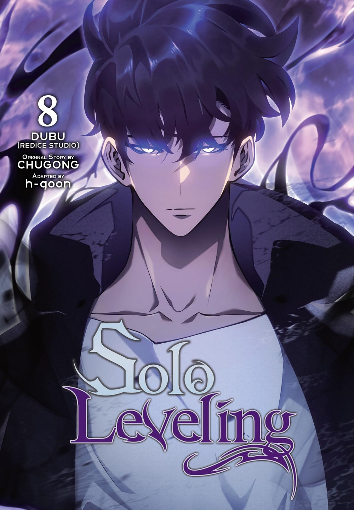
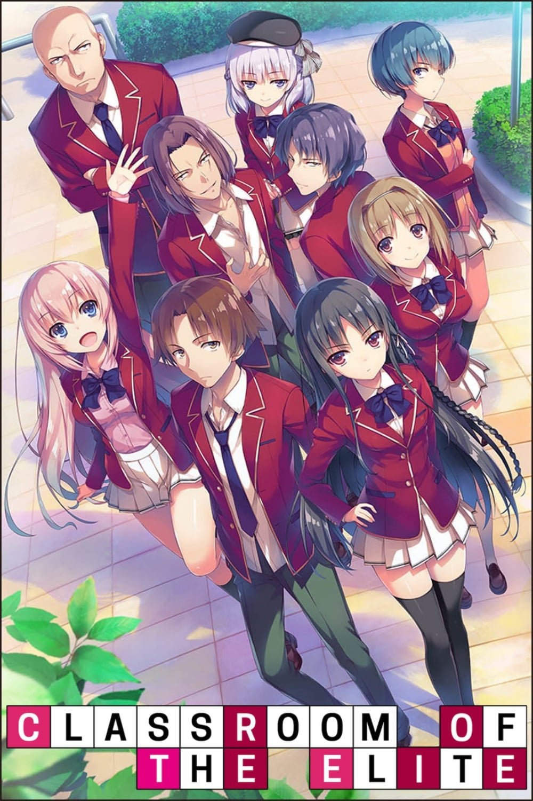
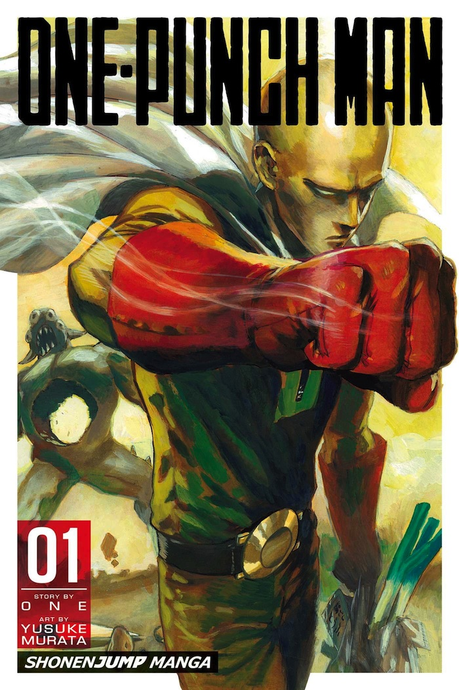
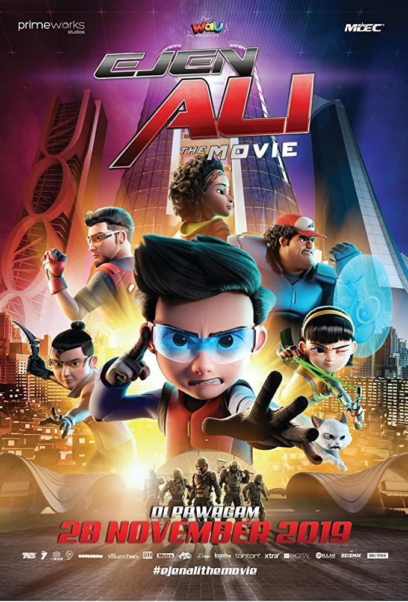
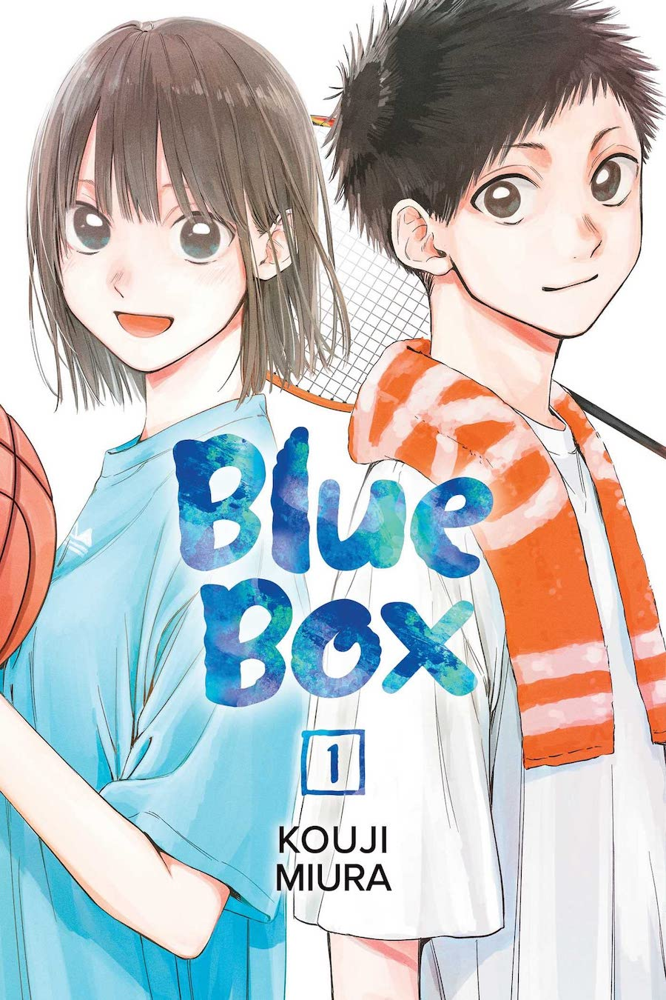

ANIME ANIME TOP DARI YANG PERNAH DI TONTON
Solo Leveling
gweh kira ni anime ga seru, eh taunya pas di tonton beehhhhh, yang awalnya si mc nya cupu bet cupu, tapi setelah kebangkitan kedua, dia jadi op cuokkk, diem diem menghanyutkan, karena si mc nya ni berkembang terus, makannya jadi op parahhhh.
Haikyuu

NI LAGI ANIME PEMBANGKIT SEMANGAT COKKKKKK, ya walaupun waktu tanding banyak slowmo AWKKWKWK, tapi perjuangan sebuah tim voli sma yang dulunya tuh mereka OP karena ada Raksasa kecil, cuman udh ga keliatan lagi tuh sekolah semenjak raksasa kecil kaga ada.
classroom of the elite
NI ANIME YANG MC NYA TUH GWEH BANGET BOSS, mc nya diam-diam cupu, padhal op parah, mc nya dingin cokk, kaga punya perasaan dih(gw juga mau cokkk), mc nya kerenn dah.
One Punch Man
NI ANIME OPM tuh anime yang BENER-BENER GA JELASS, tapi gwsuka nontonnya karena mc nya op bos, tidak terkalahkan! Bar eps pertama aja, langsung dikasih aksi EPIKK yang bikin gw yang nonton aja ngerasa keren dan kechee.
Ejen ali
GELOKK INI ANIME ORANG DEWASA BOSS, tapi dari semua season ejen ali, yang top tetep yang movie nya sih, GILAKK tersentuh gw nontonnya, seorang ejen yang kehilangan mamahnya, lalu ketemu mamahnya di data yg masih ada, lalu datanya terpaksa di hapus.
Blue Box
ANIME INI MIRIP HAIKYUU, tapi yang ini cuman fokus ke 1 orang doang, karena sebenarnya ni anime karena genre romance, jadi lebih di sorot romance nya doang, jadi ya sama sama bisa bangkitin semangat, cuman ni anime lebih beralasan karena ingin menggapai cinta seseorang.